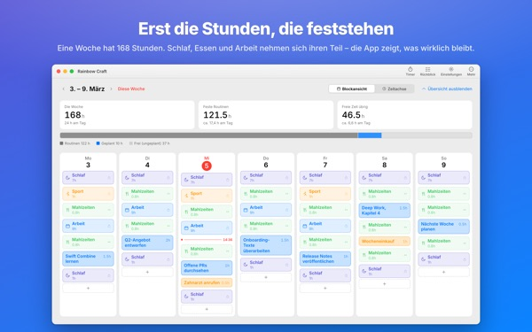
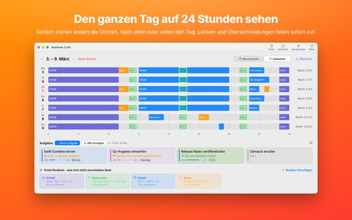
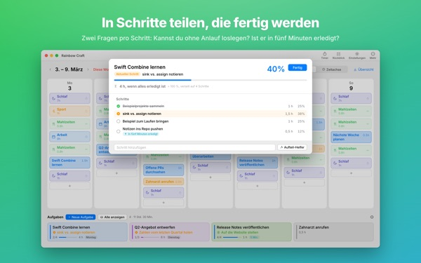
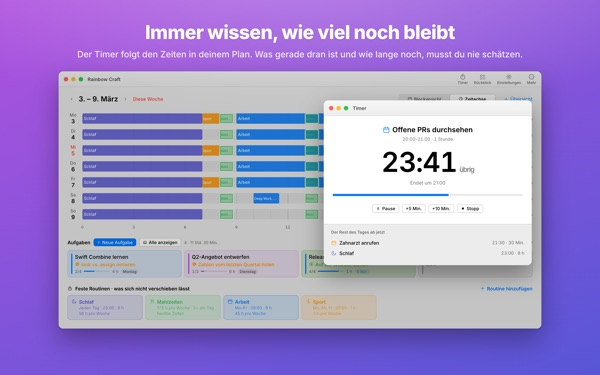
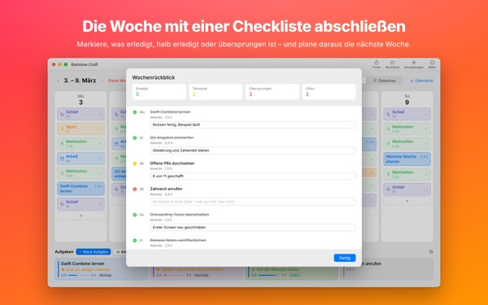

Passt das wirklich
alles in diese Woche?
Rainbow Craft legt deine Woche auf dem Mac nach Tagen und Stunden aus. Du beginnst mit der Zeit, die nicht verhandelbar ist, wie Schlaf, Mahlzeiten und Arbeit, ziehst Aufgaben in die Lücken und siehst, was tatsächlich hineinpasst.
Planung, Routinen, Aufgaben, Rückblick, Timer und Kalenderimport sind kostenlos.

Plane hier eine Woche
Wir haben die vier Routinen eingetragen, die die App beim ersten Start vorschlägt. Schalte sie an und aus und leg Aufgaben auf die Tage.
Die Liste wird länger, die Woche nie.
Eine Aufgabenliste verrät dir nicht, ob deine Woche sie überhaupt fassen kann. Sobald Schlaf, Essen und Pendeln ihren Teil genommen haben, bleibt weniger übrig als gedacht. Rainbow Craft zeigt diese Stunden als Zahlen und Felder und lässt dich jede Aufgabe an einem echten Platz ausprobieren.
Einen Tag auf 24 Stunden sehen
Die Zeitachse legt einen Tag auf ein 24-Stunden-Lineal. Lücken und Überschneidungen fallen sofort auf, und du entscheidest, wie sich überlappende Termine anordnen.
Besprechungen und Termine aus dem Kalender auf dem Mac holst du dir, statt sie doppelt zu tippen. Auf Wunsch landen deine Pläne auch in einem eigenen Rainbow-Craft-Kalender, den du auf dem iPhone siehst. Deine anderen Kalender bleiben unverändert.

Große Aufgaben in Schritte teilen, die fertig werden
Große Aufgaben bleiben liegen, wenn noch etwas im Weg steht. Die App fragt bei jedem Schritt zweierlei: Kannst du ohne Anlauf anfangen? Ist er in fünf Minuten erledigt?
Was beides erfüllt, ist ein Häppchen für jede freie Fünf-Minuten-Lücke. Alles andere braucht eingeplante Zeit. Liegt die App falsch, entscheidest du anders.

Woran du gerade bist und wie lange noch
Zur Startzeit wechselt ein Plan auf „läuft“, und wenn die Zeit um ist, fragt die App, ob du fertig bist. Der Timer folgt deinem Zeitplan.
Das Jetzt-Timer-Widget zeigt dir die aktuelle Aufgabe und die Restzeit, ohne dass du die App öffnest.

Die Woche mit einer Checkliste abschließen
Der Wochenrückblick ist eine Karte pro Tag. Markiere, was erledigt, halb erledigt oder ausgelassen ist, und plane damit die nächste Woche.
Mit demselben iCloud-Account wandern Aufgaben zwischen dieser App und Rainbow of Desire auf dem iPhone. Den Tag, den du am Mac geplant hast, hast du unterwegs dabei.

In drei Schritten loslegen
- 1
Feste Zeiten eintragen
Was jede Woche wiederkommt, wie Schlaf, Mahlzeiten und Arbeit, legst du als Routine an. Die App trägt nichts von selbst ein.
- 2
Aufgaben notieren
Je eine Zeile unten bei Aufgaben. Wann du sie erledigst, musst du noch nicht wissen.
- 3
Auf Tage ziehen
Auf einen Tag gezogen, wird daraus ein Plan. Verschiebt sich etwas, ziehst du ihn auf einen anderen Tag oder zurück in die Liste.
Die Rechnung mit den vorgeschlagenen Routinen
- Eine Woche
- 168 Stunden
- Schlaf · 8 Stunden täglich
- 56 Stunden
- Mahlzeiten · dreimal täglich
- 17,5 Stunden
- Arbeit · Schule · werktags 9 Stunden
- 45 Stunden
- Sport · Mo, Mi, Fr je 1 Stunde
- 3 Stunden
- Zeit, die du diese Woche wirklich hast
- 46,5 Stunden
Das sind nur Vorschläge. Wähle und passe die Routinen an dein Leben an. An Urlaubs- oder Reisetagen nimmst du die Arbeit für diesen Tag einfach heraus.
Alles, was du für diese Woche brauchst, ist kostenlos
Kostenlos
- Wochen- und Tagespläne, Routinen und Aufgaben ohne Limit
- Zeitachse und Aufteilen in Schritte
- Wochenrückblick, auch als Text kopierbar
- Timer und Jetzt-Timer-Widget
- Kalenderimport
- Abgleich mit Rainbow of Desire auf dem iPhone
- Rückblick-Trends der letzten 2 Wochen
Plus · Pro
- Plus: 8 Wochen Trends, deine besten Tage und Uhrzeiten
- Plus: Plan und Wirklichkeit im Vergleich
- Plus: den Plan einer guten Woche auf einmal übernehmen
- Pro: alles aus Plus, dazu deinen Zeitplan per Nur-Lesen-Link teilen
- Pro: ein Kauf schaltet Pro auch in der iPhone-App frei
Jede Stufe als Jahresabo oder einmaliger Lifetime-Kauf
Die Preise findest du in der App und im App Store. Das Jahresabo verlängert sich automatisch, wenn du nicht spätestens 24 Stunden vor Ablauf kündigst. Pro, das du auf dem iPhone gekauft hast, gilt auch auf einem Mac mit demselben iCloud-Account.
Häufige Fragen
Muss ich bei iCloud angemeldet sein?
Nicht, wenn du nur am Mac planst. Für den Abgleich mit dem iPhone und das Teilen deines Zeitplans brauchst du iCloud.
Ändert die App meine Kalender?
Bestehende Kalender bleiben unangetastet. Der Kalenderimport liest nur die Kalender, die du auswählst. Schaltest du das Schreiben in den Rainbow-Craft-Kalender ein, legt die App diesen eigenen Kalender an und schreibt nur dort hinein. Du kannst ihn jederzeit in der Kalender-App löschen.
Aufgaben vom Mac erscheinen nicht auf dem iPhone.
Prüfe, ob beide Geräte denselben iCloud-Account nutzen und Rainbow of Desire auf dem iPhone installiert ist. Der Abgleich läuft über iCloud und kann ein paar Minuten dauern.
Beendet das Schließen des Fensters die App?
Nein. Die App läuft weiter. Öffne das Fenster über das Menü „Fenster“ oder per Klick auf das Dock-Symbol wieder.
Was passiert bei einem Update mit meinen Aufgaben und Plänen?
Sie bleiben genau so, wie sie sind. Updates ändern oder löschen nichts, was du geschrieben hast.
Wie stelle ich die Sprache der App um?
Wähle sie ganz oben in den Einstellungen unter Language · 언어 · 語言 aus, dann startet die App neu in dieser Sprache. Es gibt 23 Sprachen. Selbst eingegebene Routinennamen und Aufgaben werden nicht übersetzt.
Neuer Mac, und Plus oder Pro ist weg.
Melde dich mit demselben Apple Account an und klicke in den Einstellungen auf „Kauf wiederherstellen“. Kündigen kannst du in deinen Accounteinstellungen im App Store.
Wo wird gespeichert, was ich schreibe?
Es gibt kein Konto, keine Registrierung und keinen Entwicklerserver mit deinen Plänen. Was du schreibst, bleibt auf deinen Geräten und in deiner eigenen iCloud. Die App sendet anonyme Nutzungszahlen ohne deine Inhalte, abschaltbar unter „Anonyme Nutzungsstatistik senden“ in den Einstellungen.
Hängst du fest oder wirkt etwas seltsam? Schreib an mizzking75@gmail.com. Auch in den Einstellungen der App gibt es einen Kontaktpunkt.